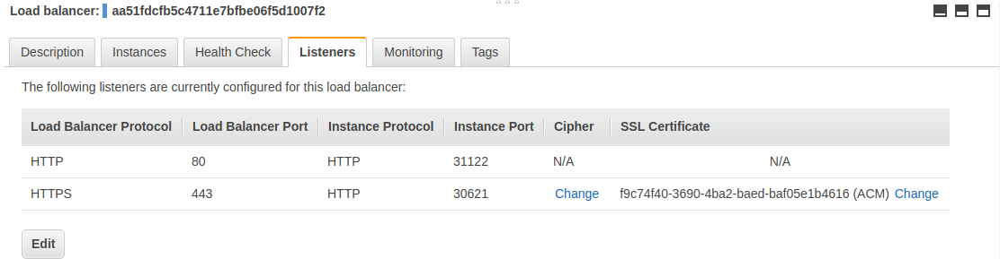

Installation Guide¶
Contents¶
- Prerequisite Generic Deployment Command
- Provider Specific Steps
- Verify installation
- Detect installed version
- Using Helm
Prerequisite Generic Deployment Command¶
Attention
The default configuration watches Ingress object from all the namespaces.
To change this behavior use the flag --watch-namespace to limit the scope to a particular namespace.
Warning
If multiple Ingresses define different paths for the same host, the ingress controller will merge the definitions.
Attention
If you're using GKE you need to initialize your user as a cluster-admin with the following command:
kubectl create clusterrolebinding cluster-admin-binding \ --clusterrole cluster-admin \ --user $(gcloud config get-value account)
The following Mandatory Command is required for all deployments.
kubectl apply -f https://raw.githubusercontent.com/kubernetes/ingress-nginx/master/deploy/static/mandatory.yaml
Tip
If you are using a Kubernetes version previous to 1.14, you need to change kubernetes.io/os to beta.kubernetes.io/os at line 217 of mandatory.yaml, see Labels details.
Provider Specific Steps¶
There are cloud provider specific yaml files.
Docker for Mac¶
Kubernetes is available in Docker for Mac (from version 18.06.0-ce)
Create a service
kubectl apply -f https://raw.githubusercontent.com/kubernetes/ingress-nginx/master/deploy/static/provider/cloud-generic.yaml
minikube¶
For standard usage:
minikube addons enable ingress
For development:
- Disable the ingress addon:
minikube addons disable ingress
- Execute
make dev-env - Confirm the
nginx-ingress-controllerdeployment exists:
$ kubectl get pods -n ingress-nginx NAME READY STATUS RESTARTS AGE default-http-backend-66b447d9cf-rrlf9 1/1 Running 0 12s nginx-ingress-controller-fdcdcd6dd-vvpgs 1/1 Running 0 11s
AWS¶
In AWS we use an Elastic Load Balancer (ELB) to expose the NGINX Ingress controller behind a Service of Type=LoadBalancer.
Since Kubernetes v1.9.0 it is possible to use a classic load balancer (ELB) or network load balancer (NLB)
Please check the elastic load balancing AWS details page
Elastic Load Balancer - ELB¶
This setup requires to choose in which layer (L4 or L7) we want to configure the ELB:
- Layer 4: use TCP as the listener protocol for ports 80 and 443.
- Layer 7: use HTTP as the listener protocol for port 80 and terminate TLS in the ELB
For L4:
Check that no change is necessary with regards to the ELB idle timeout. In some scenarios, users may want to modify the ELB idle timeout, so please check the ELB Idle Timeouts section for additional information. If a change is required, users will need to update the value of service.beta.kubernetes.io/aws-load-balancer-connection-idle-timeout in provider/aws/service-l4.yaml
Then execute:
kubectl apply -f https://raw.githubusercontent.com/kubernetes/ingress-nginx/master/deploy/static/provider/aws/service-l4.yaml kubectl apply -f https://raw.githubusercontent.com/kubernetes/ingress-nginx/master/deploy/static/provider/aws/patch-configmap-l4.yaml
For L7:
Change line of the file provider/aws/service-l7.yaml replacing the dummy id with a valid one "arn:aws:acm:us-west-2:XXXXXXXX:certificate/XXXXXX-XXXXXXX-XXXXXXX-XXXXXXXX"
Check that no change is necessary with regards to the ELB idle timeout. In some scenarios, users may want to modify the ELB idle timeout, so please check the ELB Idle Timeouts section for additional information. If a change is required, users will need to update the value of service.beta.kubernetes.io/aws-load-balancer-connection-idle-timeout in provider/aws/service-l7.yaml
Then execute:
kubectl apply -f https://raw.githubusercontent.com/kubernetes/ingress-nginx/master/deploy/static/provider/aws/service-l7.yaml kubectl apply -f https://raw.githubusercontent.com/kubernetes/ingress-nginx/master/deploy/static/provider/aws/patch-configmap-l7.yaml
This example creates an ELB with just two listeners, one in port 80 and another in port 443

ELB Idle Timeouts¶
In some scenarios users will need to modify the value of the ELB idle timeout. Users need to ensure the idle timeout is less than the keepalive_timeout that is configured for NGINX. By default NGINX keepalive_timeout is set to 75s.
The default ELB idle timeout will work for most scenarios, unless the NGINX keepalive_timeout has been modified, in which case service.beta.kubernetes.io/aws-load-balancer-connection-idle-timeout will need to be modified to ensure it is less than the keepalive_timeout the user has configured.
Please Note: An idle timeout of 3600s is recommended when using WebSockets.
More information with regards to idle timeouts for your Load Balancer can be found in the official AWS documentation.
Network Load Balancer (NLB)¶
This type of load balancer is supported since v1.10.0 as an ALPHA feature.
kubectl apply -f https://raw.githubusercontent.com/kubernetes/ingress-nginx/master/deploy/static/provider/aws/service-nlb.yaml
GCE-GKE¶
kubectl apply -f https://raw.githubusercontent.com/kubernetes/ingress-nginx/master/deploy/static/provider/cloud-generic.yaml
Important Note: proxy protocol is not supported in GCE/GKE
Azure¶
kubectl apply -f https://raw.githubusercontent.com/kubernetes/ingress-nginx/master/deploy/static/provider/cloud-generic.yaml
Bare-metal¶
Using NodePort:
kubectl apply -f https://raw.githubusercontent.com/kubernetes/ingress-nginx/master/deploy/static/provider/baremetal/service-nodeport.yaml
Tip
For extended notes regarding deployments on bare-metal, see Bare-metal considerations.
Verify installation¶
To check if the ingress controller pods have started, run the following command:
kubectl get pods --all-namespaces -l app.kubernetes.io/name=ingress-nginx --watch
Once the operator pods are running, you can cancel the above command by typing Ctrl+C.
Now, you are ready to create your first ingress.
Detect installed version¶
To detect which version of the ingress controller is running, exec into the pod and run nginx-ingress-controller version command.
POD_NAMESPACE=ingress-nginx POD_NAME=$(kubectl get pods -n $POD_NAMESPACE -l app.kubernetes.io/name=ingress-nginx -o jsonpath='{.items[0].metadata.name}') kubectl exec -it $POD_NAME -n $POD_NAMESPACE -- /nginx-ingress-controller --version
Using Helm¶
NGINX Ingress controller can be installed via Helm using the chart stable/nginx-ingress from the official charts repository.
To install the chart with the release name my-nginx:
helm install stable/nginx-ingress --name my-nginx
If the kubernetes cluster has RBAC enabled, then run:
helm install stable/nginx-ingress --name my-nginx --set rbac.create=true
Detect installed version:
POD_NAME=$(kubectl get pods -l app.kubernetes.io/name=ingress-nginx -o jsonpath='{.items[0].metadata.name}') kubectl exec -it $POD_NAME -- /nginx-ingress-controller --version